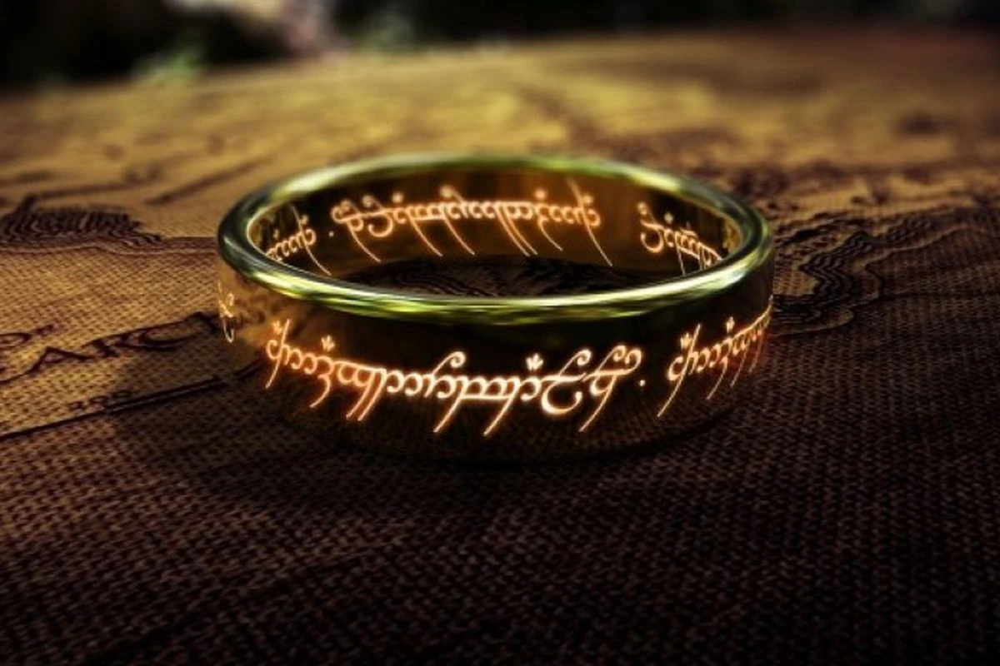

Hello, Its me, Gollum
Potential Spots:
People I Know:
About Gollum
They call us Gollum, yes, for the nasty sound we make in our throat.
Gollum, gollum. But we are not just a sound. We are quick and quiet,
with big, pale eyes that see everything in the dark, everything! We
have long fingers for climbing stone and snatching juicy, sweet fish
from the stream. It is cold down here, away from the burning sun,
but we are at home in the cool and the wet. We had a home once, a
real treasure, our own Precious. It was shiny and gold and it was
*ours*. But a thief, a nasty little hobbitses, stole it from us. Now
we are empty, a hole inside us that only the Precious can fill. We
must have it back. We needs it. We were not always this way, no
Precious, not at all.
I... I remember a time before, with the sun on my skin and the river
running clear. I had a name, a nice name, Sméagol. But that was
before the birthday present, the beautiful golden ring we found. It
was ours, my birthday present! He wouldn't give it to us, so we had
to make him. After that, they hated us, cast us out into the dark.
But the Precious took care of us, yes it did. For hundreds of years,
it was our only friend, whispering secrets to us. And now it's gone.
We search, we crawl, we follow the thief. We will get it back. It
belongs to us. It is... my Precious.